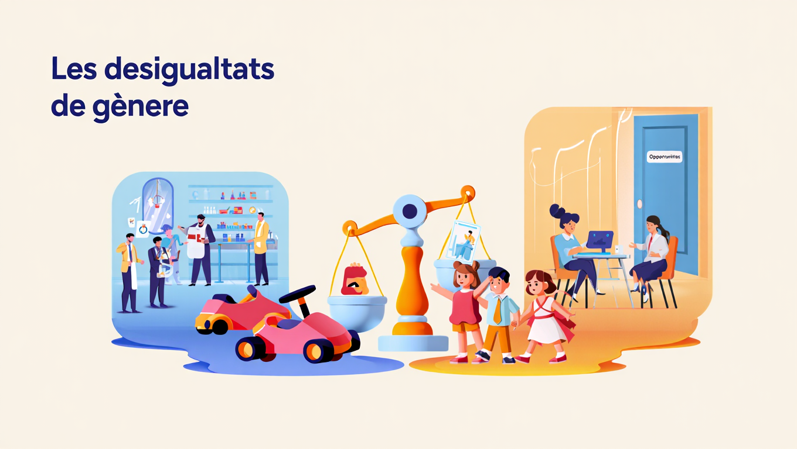

Autors: Adam El Mouden Zematy i Arnau Contreras Taberner
Aquest portafoli recull el nostre treball d’anàlisi i reflexió sobre les desigualtats de gènere, fet a l’assignatura de Problemàtica Social.
Descobrim com es construeixen els rols de gènere a través d’agents socials: com la família, l’escola, els mitjans i el llenguatge. I analitzem la seva presència en àmbits com la publicitat, la socialització infantil, les activitats que fan cada gènere i altres coses com el color que se li atribueix a cada gènere.
Cada activitat inclou una tasca pràctica i una reflexió personal, amb l’objectiu de qüestionar els estereotips i crear consciència sobre aquestes problemàtiques.

Aquest portafoli serveix per portar al dia tots els treballs i poder accedir de forma ràpida a ells per veure que és el que em fet al llarg del curs.